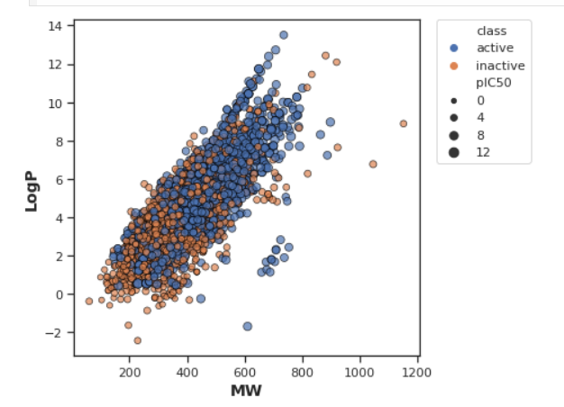

An end-to-end data science project exploring bioactivity prediction and cheminformatics-based drug discovery using ChEMBL data.
Part 1: Bioactivity Data Extraction
In this section, we begin by identifying and retrieving data from the ChEMBL database for a set of acetylcholinesterase inhibitors. We narrow our focus on bioactivity measures, cleaning and organizing the dataset for downstream tasks. This foundational step ensures our model has reliable inputs. We assess the dataset’s distribution of active vs. inactive compounds.
Part 2: Descriptor Calculation & EDA
Here we dive into molecular descriptor calculations and exploratory data analysis. Descriptors such as logP, molecular weight (MW), and hydrogen bond donors are calculated for each compound. Statistical analyses and various boxplots help visualize bioactivity trends and inter-variable relationships, allowing better understanding of the chemical features affecting bioactivity.

Part 3: Data Preparation
With our descriptors computed and relationships analyzed, this section is dedicated to preparing the final dataset for machine learning. We normalize values, remove outliers, and format our features to align with regression model requirements. This ensures consistency and robustness in the next modeling phase.
Part 4: Regression Modeling
In this section, we build a regression model using Random Forest to predict pIC50 values — a measure of compound potency. We assess predictions through comparison with experimental values and visualize how well our model captures trends using regression lines and residual plots.
Part 5: Model Comparison
We compare multiple machine learning algorithms including Random Forest, Support Vector Regression, and others to evaluate which best models the relationship between chemical descriptors and bioactivity. Performance metrics and charts offer insight into trade-offs between accuracy and generalization.